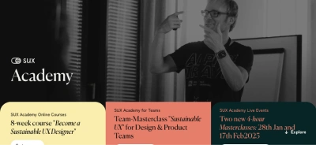
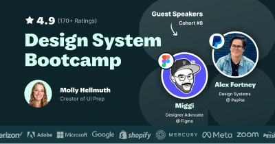

Courses
Code Academy Introduction to UI and UX Design
Get started with User Interface (UI) and User Experience (UX) Design and learn how to wireframe and prototype using Figma.
Design system university
Design systems are becoming more important as the world becomes increasingly more digital, but there are very few resources to support designers, engineers, and product people as they grow in their careers.
Design System University exists to provide training and community for people helping their organizations scale digital products sustainably.
Green UX/UI Design course
Learn the skills of a Green UX/UI Designer with a self-study or live class supported certified online course.
Create non-human Personas, Sustainability infused User Journey Maps, lightweight websites and applications, learn more about eco-conscious psychology, how to audit digital products and even more. All through this powerful course experience.
Sustainable UX Academy

Learn from how to design and build sustainable digital products. Learn the fundamentals, tools and details of Sustainable UX, Digital Sustainability or the W3C Web Sustainability Guidelines and how to incorporate them into your daily work.
AI for Designers
In this comprehensive course, you will explore AI's impact on design and how to make the most of AI and your human skills to future-proof your career. Enhance your workflow, tackle real-world challenges, and position yourself at the forefront of design innovation.
Designing Human-Centred AI Products and Services
This six-week course from Hanyang University will guide you through human-computer interaction (HCI) and how it can be used to make AI useful for all types of people.
You’ll learn how the HCI discipline can address the drawbacks of modern AI, and how to redefine it as human-centred AI to add value to every life.
Product Design (UX/UI) Course
Everything you need to know to become a product (UX/UI) designer, tailored to you, with a mindful approach.
Learn the theory and foundations of UX/UI, business and product strategy, on your own time, backed by our practical processes and mindful framework.
Design System Bootcamp

5-week Bootcamp to build a design system & become a Figma expert. Whether you build a design system for your product or just for practice. You'll become an expert in Figma's most advanced features and workflows.
CDO School
CDO School is a new playbook for design leaders—for a new business reality.
Learn to navigate both the spreadsheets and the politics that shape business decisions. Get 13+ courses, 150+ tools, live workshops, and 1:1 coaching to supercharge your career.